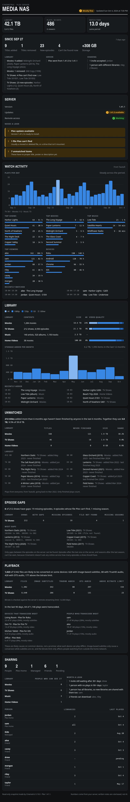

A Claude Code plugin for Plex
Your Plex server,
explained.
Ask Claude about your media library, your server and who's been watching. Cinemetric gathers the numbers and Claude explains them in plain English. Nothing on your server is ever changed.
/plugin marketplace add jeremehancock/cinemetric
/plugin install cinemetric@cinemetric
Set up Cinemetric
The library
Five skills. One curious question at a time.
Just ask Claude in your own words. Each skill knows when it's needed, runs a small script against your server and turns the result into a clear report.
setup
Connect in a minute. No token wrangling.
Cinemetric uses Sign in with Plex, the same approval screen other Plex apps use. You approve it in your browser, pick a server and you're done.
- Your token goes straight from Plex into a private file on your computer. It never appears in the chat.
- Lists every server your account can use and tests each address, preferring local, encrypted ones.
- Optionally adds Tautulli for richer watch stats, without the API key passing through the chat either.
- Shows up in Plex under Authorized Devices, so you can revoke it any time.
Ask Claude: Set up Cinemetric
> Set up Cinemetric
⏺ Open this link, sign in to Plex if asked, and
approve Cinemetric. Then tell me when you're done.
Sign in with Plex (expires in 30 minutes)
> done
⏺ Your Plex account can use 2 servers:
1. Media NAS (yours)
2. Cabin Mini (shared with you)
Which one should I use?
> 1
⏺ Connected to Media NAS at a local,
encrypted address. You can ask for a library
report now.
You can revoke access any time in Plex under
Settings → Authorized Devices ("Cinemetric").library-report
Know exactly what's on the shelf.
A full picture of every library: how much you have, how much space it takes and what quality it's in, plus the little things that need tidying up.
- Item counts and storage used, per library and in total.
- Quality breakdowns: 4K, 1080p and lower, video and audio codecs, and 10-bit video.
- What was added recently.
- Housekeeping: unmatched items, missing posters, unavailable files and very large files.
- Duplicates: titles with more than one copy, or in more than one library, and the space the extras use.
Ask Claude: Give me a Plex library report
or What's been added to Movies recently?
> Give me a Plex library report
⏺ Media NAS (Plex 1.41.1) has 4 libraries:
9,412 items using 42.1 TB.
Per library
Library Items Size 4K Movies 1,284 18.6 TB 24% TV Shows 6,930 21.1 TB 9% Music 1,150 2.3 TB – Home Videos 38 100 GB 0%
Movies are mostly HEVC; 455 files are 10-bit.
Recently added
• The Long Voyage, Paper Lanterns (Movies)
• Harbor Lights S2E6 (TV Shows)
Worth a look
• 1 file Plex can't find on disk, usually a
moved file or a drive that isn't mounted.
• 7 unmatched items with no proper metadata.
• 3 movies are missing posters.
Observations
• About 60% of your TV is H.264; converting
it to HEVC would save space.server-health
A checkup for your server, on demand.
See how Plex is doing right now and what deserves a look, from available updates to why someone's stream is buffering.
- Version and available updates, and whether remote access works.
- CPU and memory use.
- Who's streaming right now: direct play or transcode, and how much bandwidth.
- Running tasks, library scan freshness and scheduled maintenance, with anything off flagged for you.
Ask Claude: How's my Plex server doing?
or Why is Plex transcoding?
> How's my Plex server doing?
⏺ Mostly fine, but there's a Plex update waiting.
Server
• Media NAS · Plex 1.41.1 on Linux
• Update available: 1.41.2
• Remote access: working
• CPU 38% (avg 31%) · memory 52% (avg 51%)
Right now: 2 streams, 14.2 Mbps
1 direct play, 1 transcode
• alex · The Long Voyage · Living Room TV
Direct play · 64%
• sam · Harbor Lights S2E5 · Pixel 9
Transcode (hardware) · 22%
Background
• Nothing running. Movies and TV were
scanned 3 hours ago.
• Maintenance runs 02:00–05:00.
Worth a look
• Plex 1.41.2 is out. Updates bring fixes
and security patches.watch-activity
See what everyone's been watching.
Plays, watch time, favourites and habits over the last 30 days, or any period you ask about.
- Total plays and watch time.
- Most watched movies, shows and music.
- Most active users and the devices they use.
- Daily trends and recent plays.
- Uses Tautulli if you have it; otherwise Plex's own history (which counts plays only).
Ask Claude: What's been watched on Plex this month?
or Who watches the most?
> What's been watched on Plex this month?
⏺ In the last 30 days, 6 people watched 486
things for 311 hours.
What got watched (TV 301 · movies 112 · music 73)
Top shows Plays Hours Harbor Lights 64 51 Quiet Hours 41 31 North of Nowhere 29 25
Top movie: The Long Voyage (9 plays, 18 hours)
Who watched
• alex 162 plays (104 h), sam 121 (83 h),
jordan 88 (57 h)
• Mostly on Roku, then Android and Chrome
• Busiest moment: 4 streams at once
Trend
A little busier lately (255 plays vs 231 in
the first half); weekends are the peaks.
Observations
• Most plays are TV.
• alex and sam account for 60% of watch time.dashboard
Everything, on one good-looking page.
Library stats, server health and watch activity together, with charts. Ask Claude to refresh it whenever you like.
- Save it on your computer, as a private claude.ai page you can open from anywhere, or both.
- Each refresh updates the same file and the same link, so your bookmarks keep working.
- Can hide viewer names, handy before you share it.
- Nothing runs in the background. It updates only when you ask.
Ask Claude: Build my Plex dashboard

Built to be trusted
Look, don't touch.
Cinemetric reads from your server and never writes to it. Your keys stay with you.
-
Read-only, always
Every skill only reads. Nothing on your Plex server or in Tautulli is ever deleted, renamed or changed.
-
Keys stay private
Your Plex token and Tautulli key go straight into a file only you can read. They never pass through the chat.
-
Encrypted by default
Certificates are checked unless you say otherwise. It only talks to your server, Tautulli and Plex sign-in.
-
Nothing to install
Small Python scripts using only the standard library. No pip installs, no background services, no SSH.
Getting started
Up and running in four steps.
You'll need Claude Code, Python 3.8 or newer, and a computer that can reach your Plex server over the network.
-
Add the marketplace
In Claude Code, run:
/plugin marketplace add jeremehancock/cinemetric -
Install the plugin
/plugin install cinemetric@cinemetric -
Connect your server
Ask Claude
Set up Cinemetric
(or run the command below). Open the Sign in with Plex link it gives you, approve Cinemetric, tell Claude you're done, then pick your server. Cinemetric tests the connection and saves it./cinemetric:setup -
Start asking
- Give me a Plex library report
- How's my Plex server doing?
- What's been watched on Plex this month?
- Build my Plex dashboard
Optional: add Tautulli for fuller watch stats
If you run Tautulli, ask Claude to add Tautulli to Cinemetric
and tell it your Tautulli address. You get watch time, devices and busiest times. Your API key never goes through the chat:
- No login on Tautulli? Cinemetric fetches the key from Tautulli itself.
- Tautulli has a login? Claude gives you a link to a small one-time page that runs only on your computer. Paste the key from Settings → Web Interface → API and click Test and save.
- Claude Code on another machine (over SSH or in the cloud)? Claude gives you a command to run in a terminal on that machine instead.
Can't use Sign in with Plex? Set it up by hand
Create ~/.config/cinemetric/config.json yourself, in your own editor (don't paste your token into a chat):
{
"plex_url": "http://192.168.1.10:32400",
"plex_token": "YOUR-TOKEN-HERE"
}Then make it private to you:
chmod 600 ~/.config/cinemetric/config.json
You can also use PLEX_URL and PLEX_TOKEN environment variables instead.
Changed your mind? Revoke access
In Plex, go to Settings → Authorized Devices and remove Cinemetric. Run setup again any time to reconnect. If you used manual setup and think a token leaked, use sign out of all devices in your Plex account settings.
AI can make mistakes
Cinemetric's scripts collect the numbers, but the reports you read are written by Claude, an AI model. It can misread data or draw a conclusion the numbers don't fully support. Double-check anything important in Plex or Tautulli before acting on it, especially before deleting, replacing or re-encoding files.
Early days
Cinemetric is a work in progress. Skills, setup steps and report formats may change. Ideas and bug reports are welcome on GitHub issues.